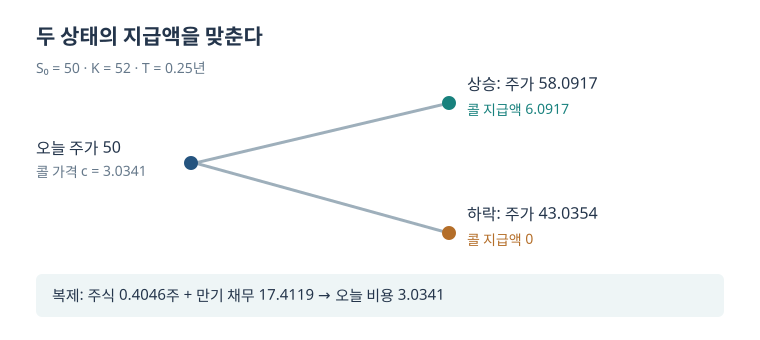

이항모형으로 옵션가격을 유도하기
옵션의 만기 지급액을 알더라도 오늘의 가격은 아직 정해지지 않는다. 이항모형은 미래 주가를 상승·하락 두 상태로 단순화하고, 주식과 채권으로 옵션을 상태마다 똑같이 지급하는 포트폴리오를 만든다. 복제가격에서 위험중립확률, 델타, 조기행사 규칙이 차례로 나온다.
- 두 상태의 지급액
- 주식·채권 복제
- 위험중립가격·조기행사
지급액에서 오늘 가격으로
콜의 만기 지급액 \((S_T-K)^+\)는 이미 알고 있다. 이제 그 지급액을 오늘 얼마에 거래해야 차익거래가 없는지 묻는다. 핵심은 주가 상승을 얼마나 예상하는지보다, 상승·하락 두 상태에서 같은 현금을 주는 다른 거래를 구성할 수 있는지다. 이 장의 숫자는 \(S_0=50\), \(K=52\), 연속복리 무위험금리 \(r=5\%\), 변동성 \(\sigma=30\%\), 만기 \(T=0.25\)년을 기준으로 한다.
한 단계의 두 미래 상태
한 기간 후 주가를 상승 상태 \(S_u=S_0u\)와 하락 상태 \(S_d=S_0d\)로 둔다. 옵션은 각 상태에서 \(C_u=(S_u-K)^+\), \(C_d=(S_d-K)^+\)를 지급한다. 현재에는 주식과 무위험채권을 거래할 수 있다고 가정한다. 두 상태의 지급액을 두 자산으로 각각 맞출 수 있으면 옵션의 가격을 미래 확률 추측 없이 복제비용으로 구할 수 있다.
변동성을 나무의 폭으로 옮기기
짧은 기간 \(\Delta t\)의 로그수익률은 연속시간 모형에서 표준편차가 대략 \(\sigma\sqrt{\Delta t}\)다. Cox–Ross–Rubinstein 방식은 이 폭을 위·아래 이동에 대응시켜
로 둔다. 한 단계라면 \(\Delta t=T\)다. 주가의 로그수익률은 음수도 가능하지만 주가 수준과 총수익률 \(S_{t+\Delta t}/S_t\)는 양수여야 한다. 따라서 정규분포 근사는 로그수익률에 적용하는 것이 자연스럽다. 이 나무는 연속분포를 두 점으로 근사하며 각 경로의 실제 발생확률은 아직 정하지 않는다.
주가나무와 콜의 두 지급액
\(T=0.25\)년이면 \(\sigma\sqrt T=0.15\), \(u=e^{0.15}\approx1.161834\), \(d=e^{-0.15}\approx0.860708\)이다. 따라서
상승 상태에서만 콜이 행사된다. 0.25년은 3개월이므로 기간을 4개월로 바꾸면 이동폭과 할인율을 모두 다시 계산해야 한다. 나무의 각 끝점에 주가와 옵션 지급액을 함께 적으면 이후 복제식이 명확해진다.
한 주식과 콜 매도로 위험을 없애기
주식 1주와 콜 \(\alpha_C\)개를 보유하면 상승·하락 지급액은 각각 \(S_u+\alpha_CC_u\), \(S_d+\alpha_CC_d\)다. 두 값을 같게 놓아
즉 주식 1주와 콜 약 2.4716개 매도를 합하면 두 상태의 현금흐름이 약 43.0354로 같아진다. 콜 매도의 상승손실이 주식의 상승이익을 상쇄한다. 반대로 콜 1개를 복제할 때는 더 적은 주식을 사고 채권을 조정한다.
무위험 포트폴리오의 오늘 가격
앞 포트폴리오는 만기에 43.0354를 확정 지급하므로 오늘 비용이 \(43.0354e^{-0.05(0.25)}\approx42.5008\)이어야 한다. 오늘 주식 1주의 가격은 50이고 콜을 2.4716개 팔아 얻는 돈은 \(2.4716c\)이므로
이보다 콜이 비싸거나 싸면 같은 확정 지급액을 가진 포트폴리오의 가격이 달라져 차익거래가 생긴다. 위험을 제거한 뒤 무위험금리로 할인하는 과정이 가격을 결정한다.
복제식을 일반형으로 풀기
콜 1개의 두 지급액을 주식 \(\Delta\)주와 만기 확정액 \(B_T\)로 복제한다.
두 식을 빼면 \(\Delta=(C_u-C_d)/(S_u-S_d)\)다. 다시 대입하면 \(B_T=(uC_d-dC_u)/(u-d)\)이고, 오늘 가격은 \(c=\Delta S_0+e^{-rT}B_T\)다. \(\Delta\)는 콜 1개를 복제하는 주식 수량이고, 앞의 주식 1주와 콜 매도 수량은 \(\alpha_C=-1/\Delta\)다. 이 관계는 포트폴리오의 기준 수량만 바꾼 것이다.

위험중립확률이 나타나는 이유
앞의 \(\Delta=(C_u-C_d)/[S_0(u-d)]\)와 \(B_T=(uC_d-dC_u)/(u-d)\)를 \(c=\Delta S_0+e^{-rT}B_T\)에 넣고 \(C_u,C_d\)의 계수를 모으면
\(q\)는 주가의 위험중립 기대 총수익률이 무위험 총수익률과 같도록 만든 가중치다. 실제 상승확률을 추정한 값은 아니다. 숫자를 넣으면 \(q\approx0.50434\)이고 \(c=e^{-0.0125}(0.50434\times6.0917)\approx3.0341\)이다. \(d<e^{rT}<u\)이면 \(0<q<1\)이고, 이 범위를 벗어나면 주식과 채권 사이에서 차익거래가 가능하다. MIT의 무차익 이항가격 설명.
두 상태와 두 독립 자산의 완전성
주식의 상태별 지급액은 \((S_u,S_d)\), 만기에 1을 주는 채권은 \((1,1)\)이다. 이 둘을 열로 놓은 지급행렬의 행렬식은 \(S_u-S_d\ne0\)이므로 두 벡터가 두 상태의 공간을 모두 채운다. 원하는 지급액 \((H_u,H_d)\)는 주식과 채권으로 유일하게 복제된다. 상태가격 \(\lambda_u,\lambda_d\)를
로 정의하면 \(\lambda_u=e^{-rT}q\), \(\lambda_d=e^{-rT}(1-q)\)다. 따라서 모든 복제 가능한 지급액의 가격은 \(\lambda_uH_u+\lambda_dH_d\)다. 이 의미에서 한 단계 두 상태 시장은 완전하다.
실제 확률과 확률할인인자
실제 확률을 \(p_u,p_d>0\)이라고 하자. 상태별 확률할인인자(stochastic discount factor)를 \(M_u=\lambda_u/p_u\), \(M_d=\lambda_d/p_d\)로 놓으면
물리적 확률 \(p\)는 어떤 상태가 얼마나 자주 오는가를, 상태가격 \(\lambda\)는 그 상태의 1달러를 오늘 얼마에 살 수 있는가를 나타낸다. 위험중립확률은 상태가격을 무위험 할인인자로 나눈 \(q=e^{rT}\lambda_u\)다. 실제 확률이 바뀌어도 거래되는 주식·채권 가격이 같다면 복제 가능한 옵션의 무차익 가격은 같다. MIT의 상태가격 강의.
델타는 상태 사이의 기울기다
한 단계 콜의 델타는
콜 1개를 복제할 때 주식 약 0.4046주가 필요하고, 콜 1개를 매도한 위험을 상쇄할 때는 주식 0.4046주를 매수한다. 슬라이드의 0.56은 앞선 \(\alpha_C=-2.4716\) 및 두 상태 지급액으로 재현되지 않는다. 델타는 이 나무의 두 점 사이 기울기이며, 연속모형의 순간 미분값과는 시간 간격이 유한할 때 다를 수 있다.
풋도 같은 가중치로 가격을 구한다
같은 주식·행사가의 풋은 상승 상태에서 \(P_u=(K-S_u)^+=0\), 하락 상태에서 \(P_d=K-S_d\approx8.9646\)을 지급한다. 주식과 채권으로 이 두 지급액을 복제하면
풋의 지급액을 바꾸어도 상태가격과 위험중립확률은 그대로다. 상태가격은 옵션마다 따로 고르는 숫자가 아니라, 거래 가능한 주식·채권이 정한 가격체계이기 때문이다.
풋가격, parity, 풋 델타
\(p=e^{-0.0125}(1-0.50434)(8.9646)\approx4.3882\)다. put–call parity로도 같은 값을 얻는다.
풋 델타는
마지막 등식은 무배당 parity를 주가 변화에 대해 비교한 결과이며, 숫자로도 \(0.4046-(-0.5954)=1\)이다. 주식 1주와 풋 약 1.6795개 매수를 결합하면 한 단계 두 상태에서 위험을 없앨 수 있다.
변동성이 나무의 폭을 정하는 방식
위험중립 총수익률 \(R\)은 \(u\) 또는 \(d\)이고 평균은 \(E^Q[R]=qu+(1-q)d=e^{r\Delta t}\)다. 두 점 분포의 분산을 직접 전개하면
\(u=e^{\sigma\sqrt{\Delta t}}\), \(d=e^{-\sigma\sqrt{\Delta t}}\)이면 짧은 기간에 \(u-d\approx2\sigma\sqrt{\Delta t}\), \(q\approx1/2\)이므로 \(\operatorname{Var}^Q(R)\approx\sigma^2\Delta t\)다. 금리는 중심을, 변동성은 위아래 폭을 정한다. 이 일치는 짧은 기간의 근사이며 한 단계의 총수익률 분산이 정확히 \(\sigma^2\Delta t\)라는 뜻은 아니다.
한 단계를 반복하면 무엇이 달라지는가
만기까지 두 단계로 나누면 각 단계마다 상승·하락이 있고 중간에 주가가 달라진다. 옵션의 만기 지급액을 먼저 계산한 뒤, 중간 노드마다 한 단계 복제가격을 적용해 오늘까지 거슬러 올라간다. 만기만 행사 가능한 유럽형과 중간에도 행사 가능한 미국형의 차이가 이 과정에서 분명해진다.
두 단계의 길이와 할인
총만기 \(T=0.25\)년을 두 단계로 나누면 \(\Delta t=T/2=0.125\)년이다. 각 단계의 이동계수와 할인인자는
한 단계 모형의 \(u=e^{0.3\sqrt{0.25}}\)를 그대로 쓰면 두 단계 전체의 변동폭이 과대해진다. 각 노드의 가격은 남은 한 단계의 기간 \(\Delta t\)로 할인한다.
재결합하는 주가나무
처음 주가 50에서 한 단계 후는 \(S_u\approx55.5948\), \(S_d\approx44.9683\)이다. 두 단계 후는
상승 뒤 하락과 하락 뒤 상승은 같은 \(S_{ud}\)에 도착한다. 경로가 아니라 현재 주가가 다음 노드의 정보를 결정하는 재결합 나무다. 경로에 따라 지급액이 달라지는 옵션에는 추가 상태를 기록해야 한다.
마지막 세 노드의 옵션 지급액
\(K=52\)인 콜과 풋의 만기 지급액은 각각
나무의 끝에는 오늘 프리미엄을 빼지 않은 만기 지급액을 쓴다. 이 값을 뒤로 할인해 오늘의 프리미엄을 구하기 때문이다. 행사가 52는 중간 주가 50보다 높아 중간 상태에서 콜은 0, 풋은 2를 지급한다.
뒤에서 앞으로 가격을 계산하기
한 단계 위험중립 상승확률은 \(q=(e^{r\Delta t}-d)/(u-d)\)다. 유럽형 콜은
풋에도 같은 식을 적용한다. \(q\)와 \(D\)가 모든 노드에서 같은 것은 이 예제에서 \(r,\sigma,\Delta t\)가 일정하기 때문이다. 노드마다 금리나 변동성이 바뀌면 그 노드의 계수를 다시 계산한다.
두 단계의 유럽형 가격 검산
\(q\approx0.503008\)이다. 콜의 중간값은 \(C_u\approx4.9065\), \(C_d=0\)이고, 풋은 \(P_u\approx0.9878\), \(P_d\approx6.7077\)이다. 한 단계 더 거슬러 올라가면
독립 검산으로 \(c_0-p_0\approx-1.35405\)이고 \(S_0-Ke^{-rT}=50-52e^{-0.0125}\approx-1.35405\)다. 같은 가격체계로 콜·풋을 계산했으므로 put–call parity가 성립한다. 중간 콜값을 구할 때는 끝 노드의 9.8156을 사용한다.
나무의 각 숫자가 뜻하는 것
끝 노드의 9.8156·2·11.5571은 만기 지급액, 중간 노드의 4.9065·0.9878·6.7077은 중간 시점의 보유가치, 처음의 2.4527·3.8067은 오늘 가격이다. 같은 숫자를 서로 다른 시점의 현금으로 직접 비교하면 안 된다. 중간에서 오늘로 이동할 때 무위험 할인인자 \(D\)를 한 번 더 적용한다.
미국형 콜의 노드별 행사 판단
미국형 옵션은 각 중간 노드에서 \(\max\{\text{즉시 행사액},\text{계속 보유가치}\}\)를 택한다. 상승 노드에서 콜의 즉시 행사액은 \(55.5948-52=3.5948\), 보유가치는 4.9065다. 하락 노드에서는 즉시 행사액 0과 보유가치 0이 같다. 따라서 가격은 유럽형 콜과 같은 약 2.4527이다. 무배당 주식의 콜을 조기행사하지 않는 원리가 나무의 숫자로 확인된다.
미국형 풋의 조기행사 프리미엄
상승 노드에서 풋의 즉시 행사액은 0, 보유가치는 0.9878이다. 하락 노드에서는 즉시 행사액 \(52-44.9683=7.0317\)이 보유가치 6.7077보다 크다. 따라서 그 노드에서 행사하고 오늘로 할인하면
유럽형 풋의 약 3.8067보다 약 0.1600 높다. 이 차이는 하락 노드에서 \(K\)를 일찍 받을 선택권의 가치다. 미국형 풋에는 유럽형 put–call parity를 그대로 대입하지 않는다.
여러 단계 나무의 계산 규칙
총기간 \(T\)를 \(m\)개로 나누어 \(\Delta t=T/m\), \(u=e^{\sigma\sqrt{\Delta t}}\), \(d=1/u\), \(q=(e^{r\Delta t}-d)/(u-d)\)를 둔다. 끝 노드 \(j\)의 주가는 \(S_0u^jd^{m-j}\)이고 옵션 만기 지급액을 거기에 적는다. 그다음 각 노드에서 \(D[qV_{\mathrm{up}}+(1-q)V_{\mathrm{down}}]\)를 계산해 거슬러 올라간다. 미국형은 매번 이 값과 즉시 행사액의 큰 쪽을 선택한다. MIT의 이항 옵션가격 강의.
재결합 나무의 노드 수
\(m=4\)이면 만기에는 상승 횟수 \(j=0,1,2,3,4\)에 대응하는 5개 주가가 있다. 중간 단계까지 모두 세면 노드 수는 \(1+2+3+4+5=15\)개다. 만기의 서로 다른 경로 수는 \(2^4=16\)이지만 같은 상승 횟수로 끝나는 경로가 합쳐진다. 일반적으로 만기 노드는 \(m+1\)개, 나무 전체 노드는 \((m+1)(m+2)/2\)개다. 이 재결합이 계산량을 줄인다.
단계가 늘면 연속모형에 가까워진다
\(m\)을 늘리면 각 단계의 폭 \(\sigma\sqrt{T/m}\)는 작아지고, 나무가 허용하는 만기 주가가 촘촘해진다. 같은 \(S_0,K,r,\sigma,T\)에서 유럽형 콜·풋은 Black–Scholes 값인 약 2.4005·3.7546으로 접근한다. 그림의 미국형 풋은 더 높은 값으로 접근한다. 개별 \(m\)의 값이 매번 한 방향으로 움직일 필요는 없다. 행사가격이 격자의 어느 위치에 걸리는지에 따라 작은 진동이 생긴다. 극한과 조기행사 가능성은 별도로 구분한다.
다음 모형으로 이어지는 질문
이항모형에서 옵션가격을 정한 것은 상승확률의 예측보다 주식과 채권을 이용한 상태별 복제였다. 단계 간격을 0에 가깝게 보내면 주가의 연속적인 무작위 움직임과 순간적인 델타 조정으로 이어진다. Brownian motion, 기하브라운운동, Itô 공식은 그 극한을 표현하는 언어이고, Black–Scholes 식은 같은 무차익 논리를 연속시간에서 구현한다. 현재의 나무에서 익힌 상태별 현금흐름과 할인 논리가 그대로 기반이 된다.